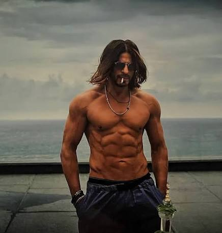

Shah Rukh Khan born as Shahrukh Khan on 2 November 1965, popularly known by the initials SRK, is an Indian actor and film producer renowned for his work in Hindi cinema. Referred to in the media as the "Baadshah of Bollywood" and "King Khan".
He has appeared in more than 90 films and earned numerous accolades, including a National Film Award and 15 Filmfare Awards.He has been awarded the Padma Shri by the Government of India, as well as the Order of Arts and Letters and Legion of Honour by the Government of France. Khan has a significant following in Asia and among the Indian diaspora worldwide. In terms of audience size and income, several media outlets have described him as one of the most successful film stars in the world. Many of his films thematise Indian national identity and connections with diaspora communities, or gender, racial, social and religious differences and grievances.As of 2015.
Khan is co-chairman of the motion picture production company Red Chillies Entertainment and its subsidiaries and is the co-owner of the Indian Premier League cricket team Kolkata Knight Riders and the Caribbean Premier League team Trinbago Knight Riders. He is a frequent television presenter and stage show performer. Khan's philanthropic endeavours have provided health care and disaster relief, and he was honoured with UNESCO's Pyramide con Marni award in 2011 for his support of children's education and the World Economic Forum's Crystal Award in 2018 for advocating for women's and children's rights in India. He regularly features in listings of the most influential people in Indian culture, and in 2008, Newsweek named him one of their fifty most powerful people in the world. In 2022, Khan was voted one of the 50 greatest actors of all time in a readers' poll by Empire, and in 2023, Time named him as one of the most influential people in the world.
• King (2026) : An upcoming action thriller directed by Siddharth Anand, scheduled for theatrical release on December 26, 2026, co-starring Suhana Khan and Abhishek Bachchan. Movie Poster
• Dunki (2023) : A comedy-drama directed by Rajkumar Hirsch.Movie Poster
• Jawan (2023) : A mass-action thriller directed by Atlee, featuring a dual role alongside Vijay Sethupathi and Nayanthara.Movie Poster
• Pathaan (2023) : A high-octane spy action film directed by Siddharth Anand that marked his major return to leading roles.Movie Poster